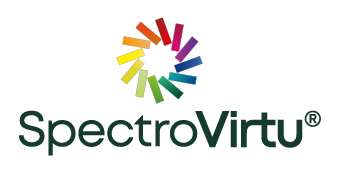
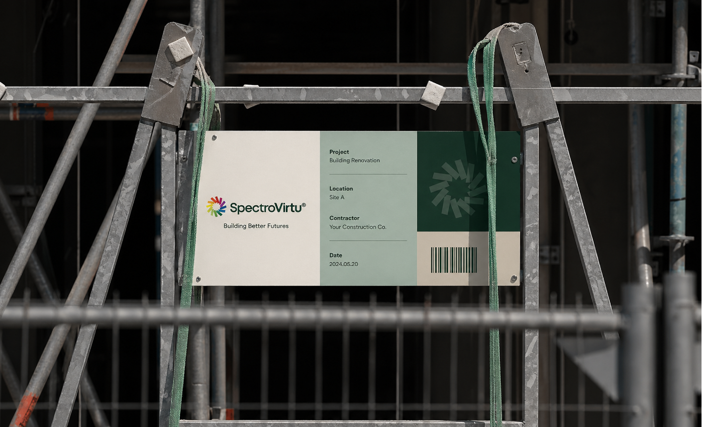
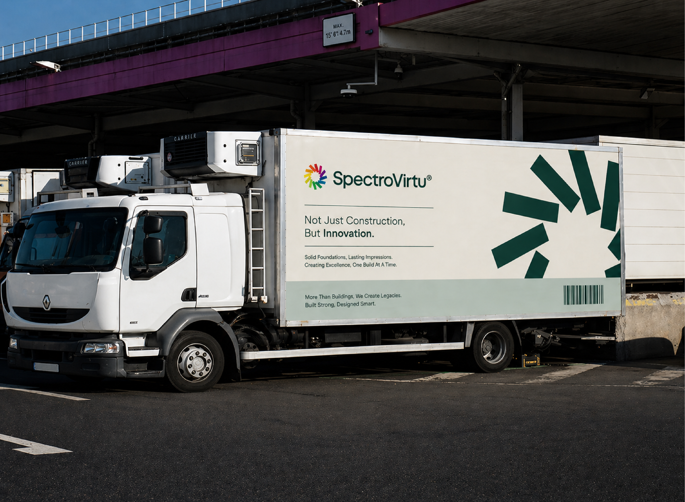

Solar is composed into the surface, proportion, and performance of architecture.
01
Brand Essence
A restrained identity for light, surface, and performance.
SpectroVirtu treats solar technology as part of the architectural language: integrated, precise, and visually composed.
Tagline
Light integrated with form.
02
Logo System
Logo use is defined by clarity and space.
Maintain the original mark. Control scale, margin, and contrast.
Primary logo
Dark field placement
1x
Protected field around all sides of the signature.
Maintain one symbol-width of clear space around every side of the signature.
The central mark depicts the sun as a source of power, vitality, and renewable energy. Its circular rhythm connects solar force with architectural precision.
Keep the top and bottom alignment fields clear. The protected area is measured from the symbol and wordmark relationship.

Centered / narrow layouts Icon only / favicon and social avatar
Icon only / favicon and social avatar
03
Color System
A quiet palette built from depth, paper, and technical softness.
Deep Forest
#163B2CRGB 22 / 59 / 44
CMYK 88 / 64 / 85 / 45
Strength, growth, sustainability
Basalt Black
#2A2A2ARGB 42 / 42 / 42
CMYK 93 / 88 / 89 / 80
Stability, depth, foundation
Linen Grey
#C9C4B9RGB 201 / 196 / 185
CMYK 25 / 21 / 26 / 0
Balance, clarity, space
Mist Sage
#B8C9C1RGB 184 / 201 / 193
CMYK 33 / 15 / 25 / 0
Harmony, nature, refinement
Warm Ivory
#ECE8E0RGB 236 / 232 / 224
CMYK 9 / 9 / 12 / 0
Structure, calm, elegance
60% Warm field
25% Signature green
10% Sage / Grey
5% Accent
04
Typography System
Measured typography for architectural clarity.
Mont / Regular and Bold
Type with quiet precision.
Mont defines the identity with clean geometry, open spacing, and a measured balance between technical clarity and premium restraint.
Mont - Regular
abcdefghijklmnopqrstuvwxyz
123456780
Mont - Bold
abcdefghijklmnopqrstuvwxyz
123456780
H1 88 / 0.98H2 48 / 1.05Body 18 / 1.7Caption 11 / 0.18em
05
Layout System
Structure begins with spacing.
A 12-column grid, asymmetric alignment, generous negative space, and fine divider lines define the proposal rhythm.
010203040506070809101112
Visual field
Specification
Signature area
Base unit 8pxSection padding 96-160pxHairline dividers 1pxAsymmetry 4/8 or 5/7
06
Visual Language
Facade rhythm, photovoltaic surfaces, material tactility, and directional light.
07
Brand Applications
Applications across site, document, field, and mobility.
The system extends from polished proposals to construction environments, preserving the same spacing, color, and signature discipline.
01
Website and mobile UI
02
Proposal and stationery
03
Brand book system

04
Construction site tag

05
Vehicle branding
08
Digital Identity
Digital surfaces that preserve the same quiet discipline.
Solar surfaces for architecture
Surface system library
Information card
Matte surface, fine border, and clear technical hierarchy.
09
Final Brand Board
SpectroVirtu identity system overview.
Logo, color, typography, layout, visual language, applications, and digital interface behavior in one system.
Corporate Identity System
Aa
Mont / Regular and Bold
System
Voice, color, logo, layout, applications, and digital behavior.
ProposalCardsUI